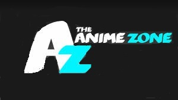

|  |
The Anime Zone |
Genres
The action genre in anime depicts extremely high levels of intense action. More often than not, you’ll be witnessing thrilling battles and action-packed fight scenes in the shows from this genre. These series will make you jump off your seat or knock your socks off. Overall, the action genre usually possesses lots of battle scenes, fluid animation, and highly-engaging elements that will make your adrenaline rush!
The main purpose of the comedy genre is…you got it…to make you laugh! Humor can depend on your personal sense of humor. The animation may not be as impressive as TV shows in the action and drama category, but that can be forgiven for the laughs. Funny moments, hilarious scenes, wacky dialogue, comical happenings—all of these are covered by the comedy genre in anime!
The fantasy genre in anime primarily deals with fantasy worlds and surreal events and locations. Most of the time, the setting is in a magical world where the characters start an adventure. Sometimes they get sent there from the real world. Magic is oftentimes a component of this genre, and various mystical elements serve as the building blocks of the story. You’ll often know it’s a fantasy anime if the environment and atmosphere seems so dazzling and dreamlike that it’ll make you feel captivated and allured.
If there’s one thing that’s similar in all mystery anime shows, it is the existence of a central enigma. Whether it’s an event, a place, or an item, there’s some sort of mystery surrounding the narrative. In the history of anime, the most popular shows in the genre have featured detectives and gumshoes.
Thriller is a genre that invokes feelings of excitement, surprise, anxiety, and anticipation and will heavily stimulate the your moods:ultra-heightened expectation, uncertainty, suspense, excitement, tension, terror. Often supplementing other genres, a good thriller lets emotions run to their threshold and invests them for key moments in the story.The cover-up of important information from the viewer and fight/chase scenes are common methods.